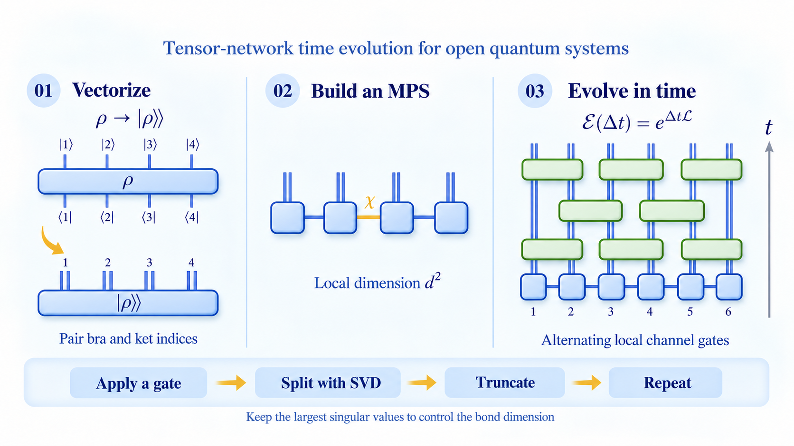
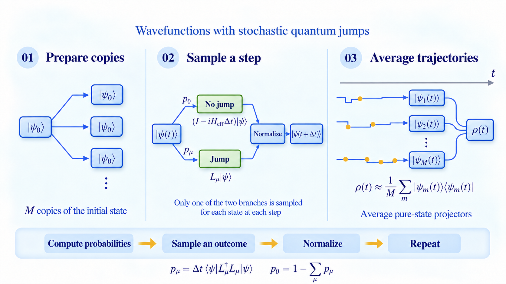

To follow the dynamics of an open quantum many-body system, I vectorize its density matrix and represent it as a
matrix product state (MPS). I then evolve this state with local quantum-channel gates using time-evolving block
decimation (TEBD).

From a density matrix to tensor-network time evolution. Blue tensors represent the state; green gates implement
local evolution. View the full-size figure →
Vectorize the density matrix
Pair the bra and ket indices at each site, giving an effective local dimension of d².
Build a matrix product state
Store the vectorized state as a chain of local tensors. The bond dimension χ controls the size of the representation.
Evolve and truncate
Apply alternating layers of local gates. After each gate, use a singular value decomposition (SVD) and retain the largest singular values.
Also known as the quantum trajectory method, this approach samples Lindblad dynamics with an ensemble of
pure states. I use it to study interacting open systems with particle loss and gain.

Independent jump histories combine into Lindblad dynamics. Schematic illustration, based on my DQPT paper's
supplemental method. View the full-size figure →
Prepare the ensemble
Start M trajectories from the same state. In my DQPT calculation, this is the half-filled ground state before the quench.
Sample and normalize
Compute the no-jump and jump probabilities at each small time step. Sample one outcome, apply its operator, normalize, and repeat.
Average the trajectories
Estimate observables from the ensemble. For the DQPT signal, average the squared overlaps with the initial state.